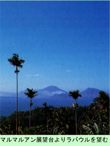

|
第４ 南太平洋方面・日本軍根拠地・ラバウルに上陸
 上陸してから二週間が過ぎ、猛軍参謀部に用事ができて、通信参謀をお伺いした時の事です。猛軍司令部に行く途中で 道路の中央に二抱えもある大樹が天に向かって聳えていました。その下では海軍の軍属さんが、大きな鋸で鼻歌を歌いな がら大木を切り倒していました。何のためだか分りませんでしたが、黙って見ていましたら、「呑気な商売、呑気な商売、 やめられぬ」と歌っていました。戦場にも色々の人がいることが分かりました。ラバウルには第八方面軍司令部（今村均陸軍大将）が布陣し、その隷下部隊の第八方面軍通信隊は、いま、ギルワで敵 と交戦中の南海支隊配属の第四十六固定無線隊と交信していました。ギルワはラバウルから洋上はるか約６２０キロの彼 方にあります。そのギルワ軍通信所から交信中に突然、『テケテケテケ』と打電してきた。「テケ」とは敵襲という意味 で、ギルワ通信所がアメリカ兵の敵から今襲撃をうけているという合図であります。軍通信所は南海支隊本部の近くに開 設しているはずですから、ギルワ通信所が敵から攻撃されるということは、凄い乱戦模様である事が伺えます。遂に、無 線交信で禁じられている生文を送信してきました。『コウシンハ、コレガサイゴデス、ワレワレモ、ジュウヲトッテ、テ キトタタカウ』という生文を送信してきました。それ以降ギルワ通信所との連絡は途絶してしまいました。南海支隊はそ の日から全軍が退却したことを後で知りました。 |